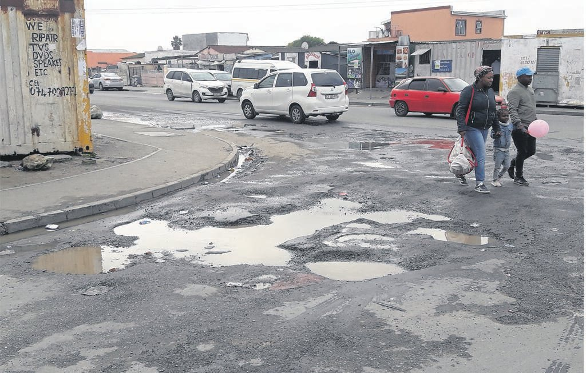
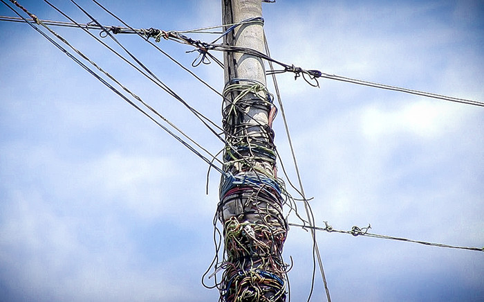

Sewage
.jpg)
About Sewage
Overflow, spill, or release of raw or partially-treated sewage from drain or sweage pipes.
Pipes are blocked by tree roots, grease and debris in sewage.
Storm flows received may be in excess of system capacity which can result in overflows from the
sewerag epipe network.
Water
About Water
Traditional taps drip because an internal rubber seal, or washer, has perished and needs
replacing.
... It is generally hiding under the decorative cap on top of the tap handle.
Sometimes you can unscrew the cap by hand, or you may need the help of a slot-headed screwdriver
or adjustable spanner
This can damage the longevity of the O-ring as well as the washer and actually cause a leak.
Check back in a minute to see if your kitchen tap is still dripping if not then leave it be.
Potholes

Causes of Potholes
Extreme weather conditions, poor road maintenance and high volumes of load-bearing traffic all
contribute to the creation of potholes.
In South Africa, high temperatures cause cracks to form in the tar. Over time, these cracks
widen,
and rain water seeps in.
Creating a hole that gets bigger and bigger as the edges
erode due to the traffic passing above.
Electricity

About Electricity
Electrical surges can be caused by anything from lightning strikes.
Faulty appliances and bad electrical wiring in the house like izinyoka tha they usually happen
in communities.
Electrical surges, sags and dips in electrical supply can often be attributed to devices
connected to your power grid that are faulty.